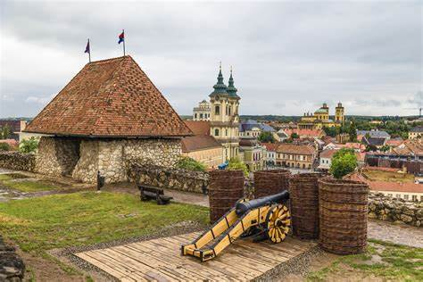
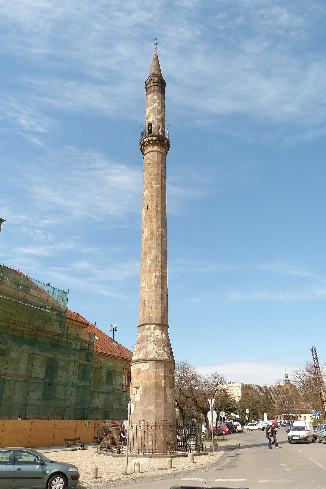

Egri vár
Az Egri vár az egyik legismertebb nevezetessége Egernek.
Minaret
Az Egri minaret az Oszmán Birodalom emléke.
Széchenyi utca

Eger főutcája, tele üzletekkel és kávézókkal.
Az Egri vár az egyik legismertebb nevezetessége Egernek.
Az Egri minaret az Oszmán Birodalom emléke.
Eger főutcája, tele üzletekkel és kávézókkal.